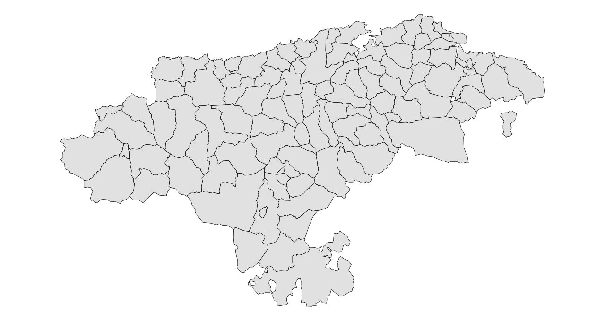
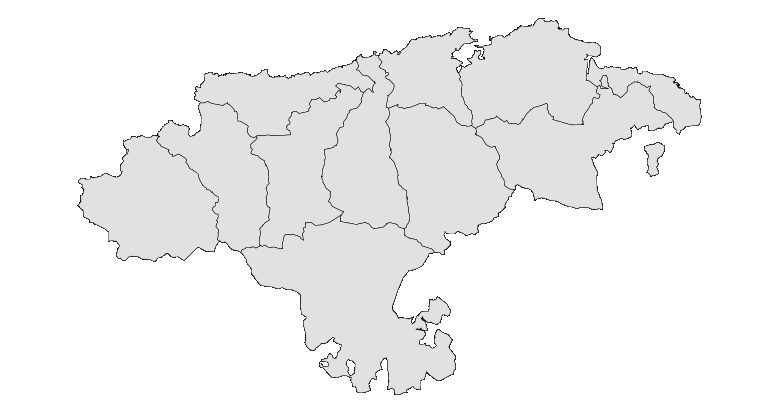

Organización territorial: municipios y comarcas
Criterios: PN 1.1, PN 2.1
🤔 Pienso5 min
Qué hago aquí: Piensa un momento y contesta con lo que ya sabes. No pasa nada si no lo sabes: es para empezar.
Escribe el nombre de tu pueblo o barrio y el de tu municipio. ¿Son el mismo? ¿Quién gobierna tu municipio?
📖 Leo y aprendo15 min
Qué hago aquí: Lee despacio, mira los dibujos y los ejemplos, y quédate con la idea clave del final.
El territorio de Cantabria se divide en 102 municipios. Un municipio puede tener un solo núcleo de población o muchos pueblos. Por ejemplo, el municipio de Camaleño, en Liébana, tiene más de veinte pueblos.

Foto: Autor desconocido · CC BY-SA 3.0 · Cantabria - Mapa municipal.svg
En Cantabria se habla de unas diez comarcas. No tienen gobierno propio, pero todo el mundo las usa para orientarse: Liébana, Saja-Nansa, Costa Occidental, Besaya, Santander, Pas-Pisueña (los Valles Pasiegos), Trasmiera, Asón-Agüera, Costa Oriental y Campoo-Los Valles.

Foto: Uhanu · CC BY-SA 4.0 · Comarcas administrativas de Cantabria.png
✏️ Hago25 min
Qué hago aquí: Haz las actividades en orden. Empieza siempre por las básicas.
Ordena de más grande a más pequeño. Después define cada uno en una línea y di cuál tiene un gobierno elegido por los vecinos.
Pon el número de orden a cada uno (1 es el primero).
Escribe en qué municipio y en qué comarca está tu colegio. Nombra dos municipios con los que limita y di si están en la misma comarca o en otra.
Clasifica las diez comarcas en tres grupos: costeras, de valle interior sin costa y al sur de la cordillera. Ayúdate de los mapas de la ficha. ¿Alguna comarca te cuesta clasificar? ¿Por qué?
Piélagos, Camaleño y Valderredible son nombres de municipios, pero no hay ningún pueblo que se llame así. ¿Qué nombran entonces? ¿Qué nos dice esto sobre cómo se organizó el territorio?
Valderredible tiene unos 300 km² y menos de 1000 habitantes; Santander, unos 35 km² y más de 170 000. Calcula la densidad de cada uno. Después explica dos consecuencias de esa diferencia para los servicios (transporte escolar, médico, tiendas, recogida de basuras…).
Casi todas las comarcas llevan el nombre de un río. Explica por qué, en una tierra de montaña, el valle de un río era la forma natural de organizar la vida (caminos, mercados, pastos, iglesia, matrimonios…).
Muchas juntas vecinales administran bienes comunales: montes, pastos o fuentes que son de todos los vecinos. ¿Por qué se pueden considerar patrimonio? ¿Qué podría pasar si se vendieran a un particular? Pregunta en casa si tu pueblo tiene alguno.
🚀 Amplío (si quieres saber más)
Qué hago aquí: ¿Has terminado? Lee la curiosidad o elige el reto. Es voluntario.
Busca en la web del Instituto Cántabro de Estadística (ICANE) o del INE la población de tu municipio en 1950 y la actual. Haz un gráfico de barras con los dos datos y calcula si ha crecido o disminuido, y en qué porcentaje. Escribe dos causas posibles del cambio (trabajo, carreteras, turismo, emigración a la ciudad…).
✅ Compruebo5 min
Qué hago aquí: Contesta sin mirar la ficha y marca cómo lo llevas.